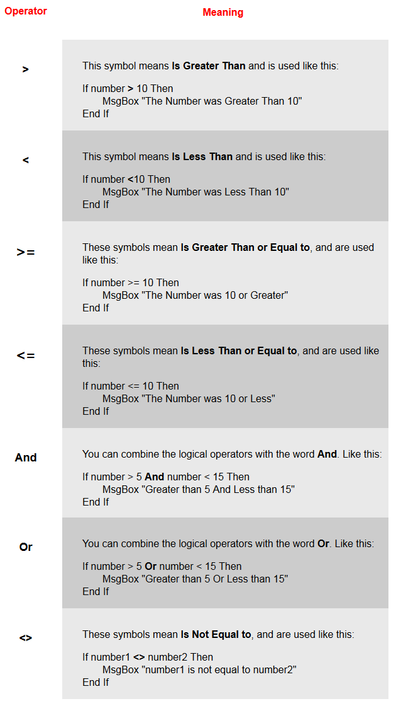

Conditional Operators
The Conditional Operators allow you to refine what you are testing for. Instead of saying "If X is equal to Y", you can specify whether it's greater than, less than, and a whole lot more. Examine the list of Operators:

A word about And and Or. Notice the format with And and Or. The variable is repeated twice
If VariableName= 7 Or VariableName= 10 Then MsgBox "7 or 10 spotted"
If you just put something like this
If VariableName> 7 Or < 10 Then MsgBox "7 or 10 spotted"
then Visual Basic will give you an error message. What you have to say is
If [test the variable for this value] And [test the variable for that value] Then
Your If statement can contain an Else part, too. The format is this:
If [conditional logic here] Then
Some Code here
Else
Some Other Code here
End If
But don't worry if all that hasn't sunk in - you'll get used to the Conditional Operators as you go along. In the next part, there's two little programmes for you to write. They will test the skills you have acquired so far.